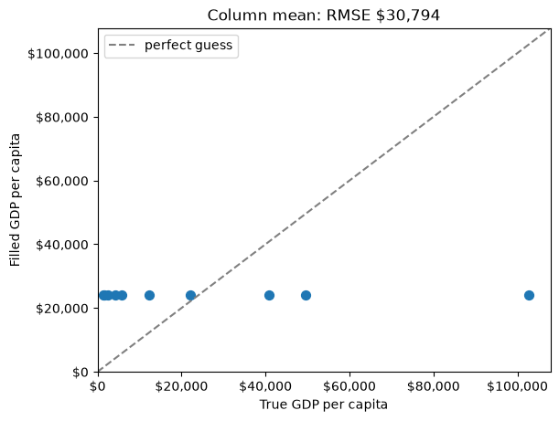
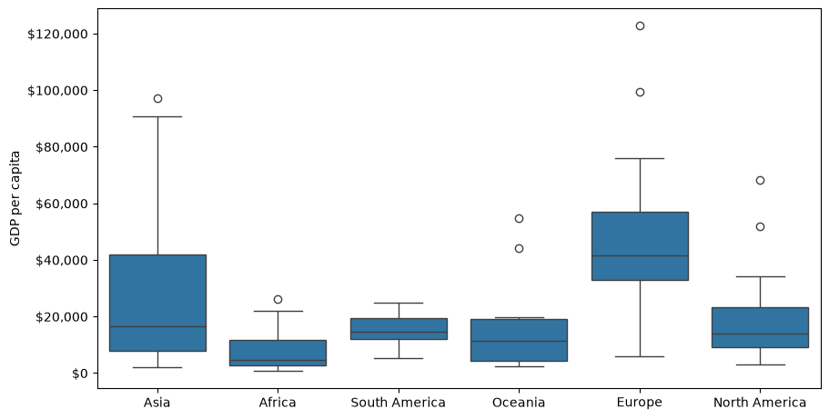
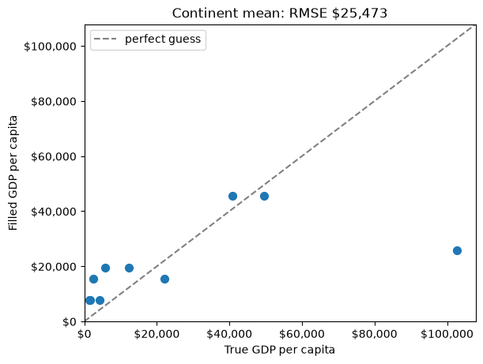
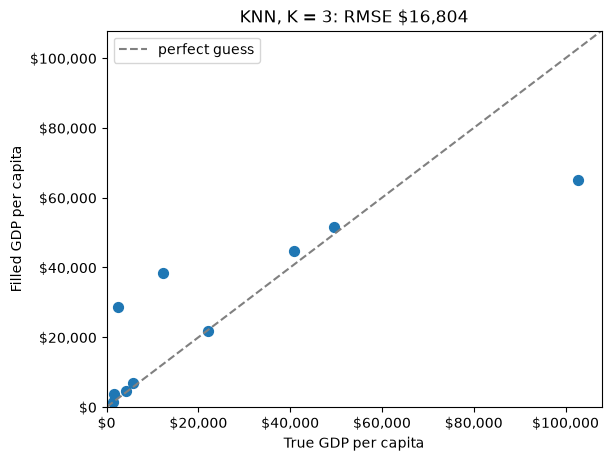
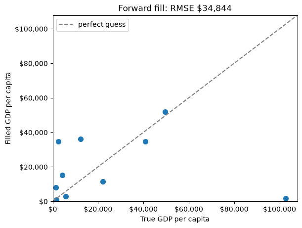
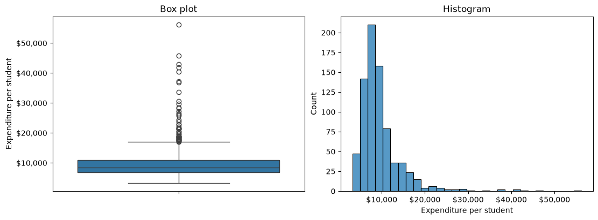

import numpy as np
import pandas as pd
import matplotlib.pyplot as plt
import seaborn as sns
from scipy import stats
from sklearn.impute import KNNImputer
from sklearn.metrics.pairwise import nan_euclidean_distances
from sklearn.preprocessing import MinMaxScaler10 Data Cleaning
The last two chapters drew pictures of a dataset that was already in good shape. Data Visualization I warned you that every plotting library drops missing values without saying so, and asked you to know how many observations a plot left out. That warning is where this chapter begins: real data arrives with gaps, with the same record entered twice, and with values so far from the rest that they deserve a second look.
Cleaning is the work of finding those problems, deciding what each one means, and fixing it in a way you can defend. The deciding is the hard part. A missing value can be dropped, filled from its own column, or filled from related rows and columns, and the right choice depends on why it is missing. An extreme value can be a measurement error to correct or a real observation to keep. Every fix changes the data you analyse afterwards, so this chapter measures what each fix costs instead of taking it on trust.
By the end of this chapter you should be able to:
- Count missing values per column with
isna(), and read whatdescribe()andinfo()already tell you about them. - Explain the three ways values go missing — MCAR, MAR, and MNAR — and why the mechanism decides whether dropping or filling is safe.
- Drop missing data with
dropna()anddrop(columns=...), and fill it with a column mean, a group mean fromgroupby(), a regression line, or nearest neighbours, measuring each fill with RMSE. - Find and remove duplicate records with
duplicated()anddrop_duplicates(), choosingsubsetandkeepdeliberately. - Flag outliers with z-scores and the IQR rule, tell a data error from a real extreme, and choose between removing, capping, and transforming.
Complete the practice activity after the worked examples.
10.1 Set Up Your Chapter Files
Download the Data Cleaning practice kit. Extract stat303-data-cleaning inside the chapters folder of your stat303-1 course folder, open stat303-1 in VS Code, and select the course environment. The terminal opens in stat303-1, so move it into the kit with cd chapters and then cd stat303-data-cleaning before you render the activity.
stat303-1/
├── .venv/
├── assignments/
└── chapters/
└── stat303-data-cleaning/
├── data_cleaning_examples.ipynb
├── activity10.ipynb
├── README.md
└── data/
├── GDP_missing_data.csv
├── GDP_complete_data.csv
└── College.csvRun data_cleaning_examples.ipynb for the lesson and complete activity10.ipynb for your own activity report, with stat303-data-cleaning as the notebook working folder. Every file is read with a relative path such as "data/GDP_missing_data.csv", so the notebooks find their data only when that folder is the working folder.
Environment check: This chapter adds two packages to the four you already have. scikit-learn (imported as sklearn) supplies the nearest-neighbour imputation, and SciPy supplies a z-score function. Install them once, in the course environment. In the VS Code terminal, with the course environment active, run:
python -m pip install scikit-learn scipyIf the import cell still fails, check the selected notebook kernel first: it must be the course environment, stat303-1/.venv, as in Project Environments, Packages, and File Paths. The package is called scikit-learn when you install it but sklearn when you import it.
10.2 The data
The first half of the chapter uses country-level indicators for 155 countries: GDP per capita, life expectancy, infant mortality, illiteracy, economic activity, and so on. It comes in two versions:
GDP_missing_data.csvhas values deliberately removed.GDP_complete_data.csvhas the same countries in the same order with those values still present.
In real work you never have the second file. Here it lets us do something you otherwise cannot: fill in a missing value, then check the guess against the truth.
gdp = pd.read_csv("data/GDP_missing_data.csv")
gdp_complete = pd.read_csv("data/GDP_complete_data.csv")
print(gdp.shape)
gdp.head()(155, 12)| economicActivityFemale | country | lifeMale | infantMortality | gdpPerCapita | economicActivityMale | illiteracyMale | illiteracyFemale | lifeFemale | geographic_location | contraception | continent | |
|---|---|---|---|---|---|---|---|---|---|---|---|---|
| 0 | 7.2 | Afghanistan | 45.0 | 154.0 | 2474.0 | 87.5 | NaN | 85.0 | 46.0 | Southern Asia | NaN | Asia |
| 1 | 7.8 | Algeria | 67.5 | 44.0 | 11433.0 | 76.4 | 26.1 | 51.0 | 70.3 | Northern Africa | NaN | Africa |
| 2 | 41.3 | Argentina | 69.6 | 22.0 | NaN | 76.2 | 3.8 | 3.8 | 76.8 | South America | NaN | South America |
| 3 | 52.0 | Armenia | 67.2 | 25.0 | 13638.0 | 65.0 | NaN | 0.5 | 74.0 | Western Asia | NaN | Asia |
| 4 | 53.8 | Australia | NaN | 6.0 | 54891.0 | NaN | 1.0 | 1.0 | 81.2 | Oceania | NaN | Oceania |
10.3 Find the missing values
The NaN entries in that preview are pandas’ marker for a missing value. Before you can decide anything about them, you need to know how many there are and where.
You have already met the first tool for this. describe() reports a count for every numeric column, and that count is the number of non-missing values. Every statistic beside it — the mean, the standard deviation, the quartiles — silently skips the gaps:
gdp.describe()| economicActivityFemale | lifeMale | infantMortality | gdpPerCapita | economicActivityMale | illiteracyMale | illiteracyFemale | lifeFemale | contraception | |
|---|---|---|---|---|---|---|---|---|---|
| count | 145.000000 | 145.000000 | 145.000000 | 145.000000 | 145.000000 | 145.000000 | 145.000000 | 145.000000 | 84.000000 |
| mean | 45.935172 | 65.491724 | 37.158621 | 24193.482759 | 76.563448 | 13.570028 | 21.448897 | 70.615862 | 51.773810 |
| std | 16.875922 | 9.099256 | 34.465699 | 22748.764444 | 7.854730 | 16.497954 | 25.497045 | 9.923791 | 31.930026 |
| min | 1.900000 | 36.000000 | 3.000000 | 772.000000 | 51.200000 | 0.000000 | 0.000000 | 39.100000 | 0.000000 |
| 25% | 35.500000 | 62.900000 | 10.000000 | 6837.000000 | 72.000000 | 1.000000 | 2.300000 | 67.500000 | 17.000000 |
| 50% | 47.600000 | 67.800000 | 24.000000 | 15184.000000 | 77.300000 | 6.600000 | 9.720000 | 73.900000 | 65.000000 |
| 75% | 55.900000 | 72.400000 | 54.000000 | 35957.000000 | 81.600000 | 19.500000 | 30.200000 | 78.100000 | 77.000000 |
| max | 90.600000 | 77.400000 | 169.000000 | 122740.000000 | 93.000000 | 70.500000 | 90.800000 | 82.900000 | 79.000000 |
There are 155 rows, but most columns count 145 and contraception only 84. info() shows the same thing as “non-null” counts, and includes the text columns too:
gdp.info()<class 'pandas.DataFrame'>
RangeIndex: 155 entries, 0 to 154
Data columns (total 12 columns):
# Column Non-Null Count Dtype
--- ------ -------------- -----
0 economicActivityFemale 145 non-null float64
1 country 155 non-null str
2 lifeMale 145 non-null float64
3 infantMortality 145 non-null float64
4 gdpPerCapita 145 non-null float64
5 economicActivityMale 145 non-null float64
6 illiteracyMale 145 non-null float64
7 illiteracyFemale 145 non-null float64
8 lifeFemale 145 non-null float64
9 geographic_location 155 non-null str
10 contraception 84 non-null float64
11 continent 155 non-null str
dtypes: float64(9), str(3)
memory usage: 14.7 KBBoth views make you subtract from 155 in your head. The direct way is isna(), which you used in NumPy and pandas in a Real Workflow to find values that failed to convert. It returns True wherever a value is missing. Because True counts as 1, .sum() gives the number of missing values per column, and .mean() gives the fraction:
gdp.isna().sum()economicActivityFemale 10
country 0
lifeMale 10
infantMortality 10
gdpPerCapita 10
economicActivityMale 10
illiteracyMale 10
illiteracyFemale 10
lifeFemale 10
geographic_location 0
contraception 71
continent 0
dtype: int64missing_percent = gdp.isna().mean() * 100
missing_percent.sort_values(ascending=False).round(1)contraception 45.8
economicActivityFemale 6.5
lifeMale 6.5
infantMortality 6.5
gdpPerCapita 6.5
economicActivityMale 6.5
illiteracyMale 6.5
illiteracyFemale 6.5
lifeFemale 6.5
country 0.0
geographic_location 0.0
continent 0.0
dtype: float64Two patterns stand out. Eight measurement columns are each missing 10 values, about 6%, and contraception is missing 71, nearly half. The country names, regions, and continents are complete. That difference will decide how each column is treated.
Note
isna() and isnull()
You will also see isnull() in other people’s code. It is the same method under a second name and returns exactly the same result. This book uses isna() throughout.
10.4 Why values go missing
Counting tells you how much is missing. Before choosing a fix, ask why, because the reason decides whether a fix is safe. Statisticians sort the reasons into three mechanisms:
| Mechanism | What it means | GDP example | Dropping or a simple fill is… |
|---|---|---|---|
| MCAR — missing completely at random | Missingness has nothing to do with any value, observed or not | A file was corrupted and lost random rows | Safe: what remains is still a fair sample |
| MAR — missing at random | Missingness depends on other columns you can see | Countries in one continent report less often | Biased, but other columns can correct it |
| MNAR — missing not at random | Missingness depends on the missing value itself | The poorest countries are the ones that do not report GDP | Biased, and the data alone cannot fix it |
The names are confusing — “missing at random” is not the safe one — so remember the idea rather than the label. MCAR means the gaps are like a coin flip. MAR means the gaps follow a pattern you can see in other columns, so a fill that uses those columns can undo the damage. MNAR means the gaps follow the very values you are missing, and any fill will be wrong in a predictable direction.
You cannot prove which mechanism you have from the data, but you can look for evidence. If the countries missing GDP are concentrated in one continent, the gaps are at least not MCAR. Keep the question in mind for every fill that follows: a method that uses related columns can help with MAR, while nothing in this chapter rescues MNAR.
10.5 Drop missing data
The bluntest fix is to throw away anything incomplete. You used dropna(subset=[...]) in the workflow chapter to drop rows missing one particular column. Called with no arguments, dropna() drops every row with any missing value:
print("rows before:", len(gdp))
print("rows after dropna():", len(gdp.dropna()))rows before: 155
rows after dropna(): 42From 155 countries to 42: over two thirds of the data gone, including thousands of perfectly good values that happened to share a row with one gap. The culprit is mostly a single column. contraception is missing for 71 countries, so almost every row has some gap. A column missing half its values is a weak basis for filling anything, so the better move is to drop that column and keep the rows:
gdp = gdp.drop(columns="contraception")
print("columns left:", gdp.shape[1])
print("rows after dropna():", len(gdp.dropna()))columns left: 11
rows after dropna(): 88Dropping one column brings dropna() back to 88 rows. Note that drop(columns=...) returns a new DataFrame, so the result is assigned back to gdp; nothing changes in place.
dropna() has three arguments that make it less blunt:
| Argument | Effect | Here |
|---|---|---|
subset=["gdpPerCapita"] |
Only look for gaps in these columns | Keeps the 145 rows that have GDP |
how="all" |
Drop a row only if every value is missing | Drops nothing; no row is entirely empty |
thresh=10 |
Keep a row only if it has at least 10 non-missing values | Keeps 143 of 155 rows |
Even 88 rows means discarding 67 countries over a handful of gaps each. Filling the gaps instead keeps those countries, which is what the rest of this section is about.
10.6 Fill missing values
Filling a missing value is called imputation, and every imputation is a guess. The question is how good the guess is, and here, unusually, we can measure it. For the 10 countries missing GDP per capita, gdp_complete holds the true values, so any fill can be scored against them.
The score is the root mean squared error (RMSE): square each error, average the squares, take the square root. It is in the same units as the data — dollars of GDP per capita here — and smaller is better. The function below computes it for a filled GDP column and draws each guess against the truth, so every method in this section gets the same report:
gdp_missing = gdp["gdpPerCapita"].isna() # the 10 rows we will be guessing
true_gdp = gdp_complete.loc[gdp_missing, "gdpPerCapita"]
def score_fill(filled_gdp, method):
"""Plot filled GDP against the truth for the missing rows, and return the RMSE."""
guesses = filled_gdp[gdp_missing]
rmse = np.sqrt(((guesses - true_gdp) ** 2).mean())
fig, ax = plt.subplots(figsize=(6, 4.5), layout="constrained")
ax.scatter(true_gdp, guesses, s=50)
ax.axline((0, 0), slope=1, color="gray", linestyle="--", label="perfect guess")
ax.xaxis.set_major_formatter("${x:,.0f}")
ax.yaxis.set_major_formatter("${x:,.0f}")
top = max(true_gdp.max(), guesses.max()) * 1.05 # same range on both axes
ax.set(xlim=(0, top), ylim=(0, top),
xlabel="True GDP per capita", ylabel="Filled GDP per capita",
title=f"{method}: RMSE ${rmse:,.0f}")
ax.legend(loc="upper left")
plt.show()
return rmsegdp_missing is a Boolean mask, so filled_gdp[gdp_missing] keeps only the guessed rows. ax.axline((0, 0), slope=1) draws the line where a guess equals the truth: points on it are perfect, and the farther a point sits from it, the worse that guess. Both axes share one range so that line is a true diagonal, and the tick formatter is the one from Data Visualization II.
10.6.1 Fill with the column mean
The simplest guess for a missing number is the typical value of its column. fillna(value) replaces every NaN in a Series with value:
mean_gdp = gdp["gdpPerCapita"].mean()
print(f"mean GDP per capita: ${mean_gdp:,.0f}")
rmse_mean = score_fill(gdp["gdpPerCapita"].fillna(mean_gdp), "Column mean")mean GDP per capita: $24,193
Every missing country gets the same $24,193, so the points form a horizontal line. A rich country and a poor one receive the same guess, which is why the RMSE is about $30,800.
Filling with the median instead — fillna(gdp["gdpPerCapita"].median()) — is the usual advice for skewed data like GDP, and it does give a more typical value ($15,184). It scores slightly worse here, about $32,100, because these particular missing countries are not typical. Neither statistic can tell one country from another.
A column-wide fill also shrinks the column’s spread, since every gap becomes the same middle value. For a categorical column, the equivalent guess is the most common category, df["col"].mode()[0].
10.6.2 Fill with a group mean
GDP per capita varies enormously by continent, which a box plot shows at once:
fig, ax = plt.subplots(figsize=(9, 4.5), layout="constrained")
sns.boxplot(data=gdp, x="continent", y="gdpPerCapita", ax=ax)
ax.yaxis.set_major_formatter("${x:,.0f}")
ax.set(xlabel="", ylabel="GDP per capita")
plt.show()
A missing European country is much more likely to be near Europe’s typical GDP than near the world’s. Filling each gap with its own continent’s mean uses the continent column to make a better guess, which is exactly the kind of fill that can correct MAR missingness.
That needs a mean for each continent, and the tool for “split the rows into groups, then compute something per group” is groupby(). The full story waits for Data Grouping and Aggregation; here you need only its simplest form. gdp.groupby("continent")["gdpPerCapita"].mean() splits the rows by continent and returns one mean per continent, skipping missing values as every pandas statistic does:
gdp.groupby("continent")["gdpPerCapita"].mean().round(0)continent
Africa 7638.0
Asia 25923.0
Europe 45455.0
North America 19625.0
Oceania 15386.0
South America 15361.0
Name: gdpPerCapita, dtype: float64That is one number per continent, six in all. To fill a column you need one number per row: each country’s own continent mean, lined up with the country. Replacing .mean() with .transform("mean") does exactly that. It computes the same group means, then hands each row the mean of its group, so the result has 155 values in the original row order:
continent_mean = gdp.groupby("continent")["gdpPerCapita"].transform("mean")
print(continent_mean.head())
rmse_group = score_fill(gdp["gdpPerCapita"].fillna(continent_mean), "Continent mean")0 25922.750000
1 7638.178571
2 15360.909091
3 25922.750000
4 15385.857143
Name: gdpPerCapita, dtype: float64
fillna() accepts a Series as well as a single value. It fills each gap from the entry at the same row label, so each country gets its continent’s mean. The guesses now differ by continent and the RMSE drops to about $25,500.
10.6.4 Fill from the nearest neighbours
The last two fills each used one other column. K-nearest-neighbour (KNN) imputation uses all of them at once: to fill a gap in one country, find the K countries most similar to it across every other numeric column, and average their values.
“Most similar” means smallest Euclidean distance, the straight-line distance you learned in geometry, computed across all the columns a pair of rows both have. A toy array of four rows and three columns shows the mechanics:
toy = np.array([[1, 2, np.nan],
[3, 4, 3],
[np.nan, 6, 5],
[8, 8, 7]])
nan_euclidean_distances(toy)array([[ 0. , 3.46410162, 6.92820323, 11.29158979],
[ 3.46410162, 0. , 3.46410162, 7.54983444],
[ 6.92820323, 3.46410162, 0. , 3.46410162],
[11.29158979, 7.54983444, 3.46410162, 0. ]])Entry \((i, j)\) is the distance from row \(i\) to row \(j\), counting rows from 0 as NumPy does. nan_euclidean_distances from scikit-learn skips any coordinate where either row is missing and scales the result up to make up for it. Row 0 is closest to row 1 (3.46), then row 2 (6.93). Row 2 is equally close to rows 1 and 3 (3.46 each).
KNNImputer does the averaging. Like every scikit-learn tool, it is used in two steps: create the object with its settings, then call fit_transform() on the data:
imputer = KNNImputer(n_neighbors=2)
imputer.fit_transform(toy)array([[1. , 2. , 4. ],
[3. , 4. , 3. ],
[5.5, 6. , 5. ],
[8. , 8. , 7. ]])With n_neighbors=2, each gap is the mean of the two nearest rows that have a value in that column. Row 0’s missing third value is 4.0, the mean of rows 1 and 2 (3 and 5). Row 2’s missing first value is 5.5, the mean of rows 1 and 3 (3 and 8).
On the real data, one more step matters. Distance adds up differences across columns, and GDP per capita runs into the tens of thousands while life expectancy runs from about 40 to 80. Unscaled, GDP alone would decide who counts as a neighbour. MinMaxScaler rescales each column to run from 0 to 1, so every column gets an equal say; it remembers each column’s original range, so inverse_transform() can convert back to dollars afterwards:
numeric = gdp.select_dtypes("number") # the eight measurement columns
scaler = MinMaxScaler()
scaled = scaler.fit_transform(numeric) # every column now runs from 0 to 1
imputer = KNNImputer(n_neighbors=3)
filled_scaled = imputer.fit_transform(scaled) # gaps filled from 3 nearest countries
filled = pd.DataFrame(scaler.inverse_transform(filled_scaled),
columns=numeric.columns, index=numeric.index)
rmse_knn = score_fill(filled["gdpPerCapita"], "KNN, K = 3")
Both scikit-learn steps return plain NumPy arrays, so the last step wraps the result back into a DataFrame with the original column names and row labels. The RMSE falls to about $16,800, the best so far, because KNN finds countries that resemble the missing one on every measurement at once. It also fills the gaps in the other seven columns in the same pass.
The choice \(K = 3\) matters more than it looks. On this data, \(K = 2\) gives about $21,400 and \(K = 5\) about $23,500, so K is a setting to choose carefully rather than a detail. Choosing it properly uses a technique called cross-validation, which comes in the next course of the sequence.
10.6.5 Forward fill, and when not to use it
ffill() fills each gap with the value in the row above it (bfill() uses the row below). For data in a meaningful order, such as daily temperatures, yesterday’s value is a sensible guess for a missing today. Our countries are in alphabetical order, which has nothing to do with GDP:
rmse_ffill = score_fill(gdp["gdpPerCapita"].ffill(), "Forward fill")
Forward fill gives the worst result of all, about $34,800: worse than guessing the mean, because the neighbour in alphabetical order is no guide to a country’s wealth. It also cannot fill a gap in the very first row, since there is nothing above it; Afghanistan’s missing illiteracyMale survives a forward fill of the whole table.
10.6.6 Compare the fills
pd.Series({
"Forward fill": rmse_ffill,
"Column mean": rmse_mean,
"Regression on lifeFemale": rmse_regression,
"Continent mean": rmse_group,
"KNN, K = 3": rmse_knn,
}).round(0).rename("RMSE")Forward fill 34844.0
Column mean 30794.0
Regression on lifeFemale 25570.0
Continent mean 25473.0
KNN, K = 3 16804.0
Name: RMSE, dtype: float64The ranking follows how much information each method uses. Forward fill uses an irrelevant ordering, the column mean uses only the column itself, the next two each add one related variable, and KNN uses every column at once. That is the general lesson, but the exact order is specific to this data. On another dataset a group mean can beat KNN, which is why the comparison is worth running whenever you can.
Every fill shares one limit: it invents values that look like real data. Whatever you choose, record which values were filled and how, so a reader can judge how much the results depend on your guesses.
10.7 Find and remove duplicates
A duplicate is the same record appearing more than once. Duplicates come from data entry errors, from combining files that overlap, or from a system that saved a record twice, and they are dangerous because they look like real data: a duplicated student is counted twice in every total and average.
A small table of student records, with some entered twice, shows the tools:
students = pd.DataFrame({
"student_id": [101, 102, 103, 101, 104, 102, 105, 103],
"name": ["Alice", "Bob", "Charlie", "Alice", "David", "Bob", "Eve", "Charlie"],
"major": ["CS", "Math", "CS", "CS", "Physics", "Math", "Biology", "Stats"],
"gpa": [3.8, 3.5, 3.9, 3.8, 3.7, 3.5, 3.6, 3.9],
})
students| student_id | name | major | gpa | |
|---|---|---|---|---|
| 0 | 101 | Alice | CS | 3.8 |
| 1 | 102 | Bob | Math | 3.5 |
| 2 | 103 | Charlie | CS | 3.9 |
| 3 | 101 | Alice | CS | 3.8 |
| 4 | 104 | David | Physics | 3.7 |
| 5 | 102 | Bob | Math | 3.5 |
| 6 | 105 | Eve | Biology | 3.6 |
| 7 | 103 | Charlie | Stats | 3.9 |
duplicated() returns a Boolean Series that is True for every row identical to an earlier one. Summing it counts the repeats, and using it as a mask shows them:
print("exact duplicate rows:", students.duplicated().sum())
students[students.duplicated()]exact duplicate rows: 2| student_id | name | major | gpa | |
|---|---|---|---|---|
| 3 | 101 | Alice | CS | 3.8 |
| 5 | 102 | Bob | Math | 3.5 |
Only the second copy of each record is flagged: by default the first occurrence counts as the original. To see every copy, including the first, pass keep=False:
students[students.duplicated(keep=False)]| student_id | name | major | gpa | |
|---|---|---|---|---|
| 0 | 101 | Alice | CS | 3.8 |
| 1 | 102 | Bob | Math | 3.5 |
| 3 | 101 | Alice | CS | 3.8 |
| 5 | 102 | Bob | Math | 3.5 |
Rows 0 and 3 (Alice) and rows 1 and 5 (Bob) are identical in every column. Charlie is not flagged, because his two rows differ in major. Whether those are two records of one student or a data error is a question about the data, not about pandas. If student_id is supposed to be unique, check that column alone with subset:
print("repeated student IDs:", students.duplicated(subset=["student_id"]).sum())
students[students.duplicated(subset=["student_id"], keep=False)]repeated student IDs: 3| student_id | name | major | gpa | |
|---|---|---|---|---|
| 0 | 101 | Alice | CS | 3.8 |
| 1 | 102 | Bob | Math | 3.5 |
| 2 | 103 | Charlie | CS | 3.9 |
| 3 | 101 | Alice | CS | 3.8 |
| 5 | 102 | Bob | Math | 3.5 |
| 7 | 103 | Charlie | Stats | 3.9 |
By ID there are three repeats, and Charlie’s conflicting rows now appear. Exact duplicates are safe to remove; conflicting ones need a decision about which version is right.
drop_duplicates() removes duplicates and takes the same subset and keep arguments: keep="first" (the default) keeps the first copy, keep="last" keeps the last, and keep=False removes every copy.
deduplicated = students.drop_duplicates()
print(len(students), "rows ->", len(deduplicated), "rows")
deduplicated8 rows -> 6 rows| student_id | name | major | gpa | |
|---|---|---|---|---|
| 0 | 101 | Alice | CS | 3.8 |
| 1 | 102 | Bob | Math | 3.5 |
| 2 | 103 | Charlie | CS | 3.9 |
| 4 | 104 | David | Physics | 3.7 |
| 6 | 105 | Eve | Biology | 3.6 |
| 7 | 103 | Charlie | Stats | 3.9 |
Removing exact duplicates leaves six rows, including both of Charlie’s. Had you dropped by ID instead — students.drop_duplicates(subset=["student_id"], keep="last") — you would have kept one Charlie, the Stats row, which is the right choice only if you know the later entry is the correction. keep encodes that judgement, so choose it on purpose.
The GDP data has no repeats, either as whole rows or as countries:
print("duplicate rows:", gdp.duplicated().sum())
print("repeated countries:", gdp["country"].duplicated().sum())duplicate rows: 0
repeated countries: 010.8 Find and handle outliers
An outlier is an observation far from the rest of the data. Outliers matter because the mean, the standard deviation, and a fitted line are all pulled toward them, so a few extreme values can change the story a summary tells.
This section uses data on 777 US colleges from An Introduction to Statistical Learning. The first column holds the college names, so index_col=0 uses it as the row labels, as in Reading Data:
college = pd.read_csv("data/College.csv", index_col=0)
print(college.shape)
college[["Private", "Apps", "Enroll", "Expend", "Grad.Rate"]].head()(777, 18)| Private | Apps | Enroll | Expend | Grad.Rate | |
|---|---|---|---|---|---|
| Abilene Christian University | Yes | 1660 | 721 | 7041 | 60 |
| Adelphi University | Yes | 2186 | 512 | 10527 | 56 |
| Adrian College | Yes | 1428 | 336 | 8735 | 54 |
| Agnes Scott College | Yes | 417 | 137 | 19016 | 59 |
| Alaska Pacific University | Yes | 193 | 55 | 10922 | 15 |
Expend is instructional expenditure per student, in dollars, and Grad.Rate is the graduation rate as a percentage.
10.8.1 See them
A box plot marks outliers directly: the points beyond the whiskers. A histogram shows the same values as a long, thin tail:
fig, (ax_box, ax_hist) = plt.subplots(1, 2, figsize=(11, 4), layout="constrained")
sns.boxplot(data=college, y="Expend", ax=ax_box)
ax_box.yaxis.set_major_formatter("${x:,.0f}")
ax_box.set(ylabel="Expenditure per student", title="Box plot")
sns.histplot(data=college, x="Expend", bins=30, ax=ax_hist)
ax_hist.xaxis.set_major_formatter("${x:,.0f}")
ax_hist.set(xlabel="Expenditure per student", title="Histogram")
plt.show()
Most colleges spend between about $5,000 and $15,000 per student, and a tail of colleges spends far more, up to Johns Hopkins at $56,233. A picture tells you outliers exist; to work with them you need a rule that flags each one.
10.8.2 Flag them with a rule
The z-score rule. A z-score measures how many standard deviations a value is from the mean, \(z = (x - \bar{x}) / s\). A common convention flags values with \(|z| > 3\). stats.zscore() from SciPy computes z-scores for a whole column:
z = stats.zscore(college["Expend"])
z_outlier = np.abs(z) > 3
print("z-score outliers:", z_outlier.sum())z-score outliers: 16stats.zscore() returns a NumPy array, so np.abs() takes the absolute value and the comparison gives a Boolean array you can sum. It divides by the standard deviation with ddof=0, the NumPy default from NumPy Fundamentals; computing (x - x.mean()) / x.std(ddof=0) by hand gives the same values.
The IQR rule. This is the rule the box plot used. With \(Q1\) and \(Q3\) the 25th and 75th percentiles and \(IQR = Q3 - Q1\), anything below \(Q1 - 1.5 \times IQR\) or above \(Q3 + 1.5 \times IQR\) is an outlier. These boundaries are called Tukey’s fences. quantile() gives the percentiles:
q1, q3 = college["Expend"].quantile([0.25, 0.75])
iqr = q3 - q1
lower, upper = q1 - 1.5 * iqr, q3 + 1.5 * iqr
print(f"fences: ${lower:,.0f} to ${upper:,.0f}")
iqr_outlier = (college["Expend"] < lower) | (college["Expend"] > upper)
print("IQR outliers:", iqr_outlier.sum())fences: $632 to $16,948
IQR outliers: 48The IQR rule flags 48 colleges and the z-score rule only 16. The difference comes from the right skew. The z-score uses the mean and standard deviation, and the long tail inflates both, so a value has to be very extreme to reach \(|z| > 3\). The quartiles barely move with the tail, so the IQR fences stay close to the bulk of the data.
| Rule | Built on | Assumes | Flags |
|---|---|---|---|
| z-score | Mean and standard deviation | Roughly bell-shaped data | Fewer, more extreme values |
| IQR | Quartiles | Nothing about shape | More values; suits skewed data |
Neither number is the “true” count of outliers. A rule only nominates candidates; deciding what to do with them comes next.
10.8.3 Ask whether it is an error
Before handling an outlier, ask whether the value is possible. The graduation rates show the difference:
college["Grad.Rate"].describe()count 777.00000
mean 65.46332
std 17.17771
min 10.00000
25% 53.00000
50% 65.00000
75% 78.00000
max 118.00000
Name: Grad.Rate, dtype: float64college.loc[college["Grad.Rate"] > 100, ["Grad.Rate"]]| Grad.Rate | |
|---|---|
| Cazenovia College | 118 |
A graduation rate of 118% is impossible, so Cazenovia College’s value is a data error, not an extreme. Capping it at some fence would still leave an invented number. The honest fix is to mark it as missing, which turns it into the problem the first half of this chapter solved:
college.loc[college["Grad.Rate"] > 100, "Grad.Rate"] = np.nanJohns Hopkins spending $56,233 per student is the opposite case: extreme, but entirely plausible for a research university. Removing it would delete a real fact about American colleges. Errors get corrected or set to missing; real extremes get a deliberate choice from the methods below.
10.8.4 Handle them
Four common ways to handle real outliers, each applied to Expend with the IQR fences:
expend = college["Expend"]
removed = expend[~iqr_outlier] # drop flagged colleges
capped = expend.clip(lower, upper) # pull them back to the fences
median_filled = expend.mask(iqr_outlier, removed.median()) # replace with a typical value
logged = np.log(expend) # compress the whole scale
pd.DataFrame({
"rows": [len(expend), len(removed), len(capped), len(median_filled)],
"mean": [expend.mean(), removed.mean(), capped.mean(), median_filled.mean()],
"std": [expend.std(), removed.std(), capped.std(), median_filled.std()],
}, index=["original", "removed", "capped", "median-filled"]).round(0)| rows | mean | std | |
|---|---|---|---|
| original | 777 | 9660.0 | 5222.0 |
| removed | 729 | 8671.0 | 2839.0 |
| capped | 777 | 9183.0 | 3396.0 |
| median-filled | 777 | 8638.0 | 2753.0 |
clip(lower, upper), from Pandas Intermediate, moves any value outside the range to the nearest fence; this is also called winsorizing. mask(condition, value) replaces the values where the condition is True.
All three shrink the standard deviation from about $5,200 to under $3,400, and all three lower the mean. That is the point of handling outliers, and also the danger: the cleaned column describes colleges that spend less, and vary less, than the real ones do.
| Method | Keeps every row | Cost |
|---|---|---|
| Remove | No | Loses the colleges, and anything else they recorded |
| Cap (winsorize) | Yes | Invents a boundary value; real extremes look ordinary |
| Replace with the median | Yes | Invents a typical value; spread shrinks most |
| Log transform | Yes | Changes the units, so results must be read on a log scale |
The log transform is different in kind. It keeps every value and its order, but compresses large values more than small ones, so the skewness of Expend drops from about 3.5 to 0.8. It suits strictly positive, right-skewed quantities such as money, and np.log1p() handles columns that contain zeros.
Whichever you choose, report it: how many values were flagged, by which rule, and what was done to them.
10.9 Summary Cheat Sheet
Find missing values.
| Goal | Code |
|---|---|
| Count per column | df.isna().sum() |
| Percent per column | df.isna().mean() * 100 |
| Non-missing counts | df.describe() (count row), df.info() |
Drop or fill.
| Goal | Code |
|---|---|
| Drop rows with any gap | df.dropna() |
| Only check some columns | df.dropna(subset=["col"]) |
| Keep rows with at least n values | df.dropna(thresh=n) |
| Drop a mostly empty column | df.drop(columns="col") |
| Fill with one value | df["col"].fillna(df["col"].mean()) |
| Fill with each row’s group mean | df["col"].fillna(df.groupby("g")["col"].transform("mean")) |
| Fill from a related column | slope, intercept = np.polyfit(x, y, 1) on complete rows |
| Fill from nearest neighbours | MinMaxScaler, then KNNImputer(n_neighbors=k).fit_transform(...) |
| Fill from the row above | df.ffill() — only for ordered data |
| Score a fill against the truth | np.sqrt(((guess - truth) ** 2).mean()) |
Duplicates.
| Goal | Code |
|---|---|
| Count repeated rows | df.duplicated().sum() |
| Show every copy | df[df.duplicated(keep=False)] |
| Check one key column | df.duplicated(subset=["id"]) |
| Remove repeats | df.drop_duplicates(subset=..., keep="first" / "last" / False) |
Outliers.
| Goal | Code |
|---|---|
| z-scores | z = stats.zscore(s); flag np.abs(z) > 3 |
| IQR fences | q1, q3 = s.quantile([0.25, 0.75]); q1 - 1.5 * iqr, q3 + 1.5 * iqr |
| Impossible value → missing | df.loc[condition, "col"] = np.nan |
| Cap at the fences | s.clip(lower, upper) |
| Replace flagged values | s.mask(flags, value) |
| Compress a right skew | np.log(s) or np.log1p(s) |
The rule to remember: measure what a fix costs before you trust it.
10.10 Practice Activity: Find, Fill, and Defend
Goal: Find each kind of problem in real data, choose a fix, and measure or justify what the fix did.
File: activity10.ipynb from the practice kit.
Submit: activity10.html through the final upload question in the Data Cleaning Canvas quiz.
This section contains the complete activity instructions. The starter loads the data and supplies spaces to record your work. Open activity10.ipynb from the folder prepared in Set Up Your Chapter Files, using the same project environment. The worked examples above are preparation, not additional submission requirements.
The starter loads gdp and gdp_complete from the kit’s data/ folder, college with the college names as row labels, and a small enrollments table with repeated records.
A. Count the Gaps, and the Cost of Dropping Them
- Replace
Your Namein the opening Raw cell’sauthorfield. Run the setup cell; it must report the shapes(155, 12),(155, 13),(777, 18), and(9, 4). - Report the number and the percentage of missing values in each column of
gdp, and name the column you would drop and why. - Report how many rows
dropna()keeps before and after dropping that column, and say in one sentence why dropping rows is a poor fix here.
B. Fill One Column Two Ways, and Score Both
- Fill the missing values of
lifeFemaleingdpwith the column mean, and again with each country’s continent mean usinggroupby("continent")andtransform("mean"). - Using
gdp_complete, compute the RMSE of each fill on the rows wherelifeFemalewas missing. - Say which fill did better and give a reason based on what each one uses.
C. Duplicates, Exact and by Key
- Count the exact duplicate rows in
enrollments, then count repeated values ofstudent_idalone, and show every copy of each. - Remove the duplicates so that each student appears once, and state which
keepvalue you chose and why it fits the rows you saw.
D. Outlier or Error
- Flag outliers in
college["Grad.Rate"]with the IQR rule and with the z-score rule, and report how many each flags. - Show the flagged colleges. Identify the value that is impossible rather than extreme, and set it to missing.
- For one flagged value that is possible, say whether you would keep, cap, or remove it, and justify the choice in one or two sentences.
Render and Submit
Restart the kernel, run all cells in order, resolve unexpected errors, and save. Include your outputs and explanations for A–D, and a short Markdown completion note. From stat303-data-cleaning in the terminal, run:
quarto render activity10.ipynb --to htmlFollow the Quarto refresher: inspect the HTML and a copy opened outside the project folder, and confirm that every output appears and your name is on the report. Upload only activity10.html to the Data Cleaning Canvas quiz; keep your notebook locally.
HTML grading (16 points): missing counts and percentages, the dropped column, and the dropna() comparison (4); both fills of lifeFemale, both RMSEs, and the explanation (4); exact and key-based duplicates found, removed, and the keep choice justified (4); both outlier rules, the impossible value set to missing, and one justified decision (3); name, readable report, and completion note (1).
10.11 Extended Practice
These longer exercises are additional practice, not requirements for the Canvas quiz. Work in a separate notebook beside your activity and load the data the way the chapter does. Include your code, outputs, and explanations.
10.11.1 Every Fill for One Column
Score all five fills from the chapter — forward fill, column mean, continent mean, regression on the most correlated column, and KNN — for infantMortality instead of GDP per capita. Does the ranking match the one for GDP? Then try KNN with K from 1 to 10 and plot RMSE against K. What does the plot say about choosing K by trying one value?
10.11.2 What a Fill Does to a Distribution
Fill gdpPerCapita with the column mean and with KNN, and draw the three distributions — the original non-missing values and the two filled columns — as histograms on one figure with shared axes. Which fill changes the shape of the distribution, and why does that matter for a summary like the standard deviation?
10.11.3 Handling Outliers in Expenditure
Apply all four outlier treatments to college["Expend"] and draw a scatter plot of Grad.Rate against each version, with a regplot line. How does the slope of the line change? Which treatment would you report, and what would you say about it in a caption?
10.11.4 A Cleaning Log
Clean GDP_missing_data.csv from start to finish: drop what should be dropped, fill what should be filled, and check for duplicates and outliers in every numeric column. Keep a log as a small DataFrame with one row per step — what was found, what you did, and how many values it affected — and argue, for one column, which missingness mechanism seems most plausible and what evidence in the data supports it.
10.12 Before You Move On
The habit to carry forward is measuring a fix before you trust it. Dropping rows, filling gaps, removing repeats, and capping extremes each change the data every later step will see, and each one can be checked: how many rows it removed, how far its guesses were from the truth, how much it moved a mean or a standard deviation.
The other habit is asking what a problem means before choosing a fix. A gap may follow a pattern you can see in other columns, or one you cannot. A repeated record may be a copy or a correction. An extreme value may be an error or a fact. The code for every fix in this chapter is a line or two; the judgement around it is the work.
For any dataset you clean, you should be able to answer five questions:
- How many values were missing in each column, and why might they be missing?
- What did you drop, and how much data did that cost?
- How did you fill the rest, and how good were those guesses?
- Were any records duplicated, and how did you decide which copy to keep?
- Which values did you flag as outliers, and which of them were errors?
Continue to Data Preparation, where clean data is reshaped into the form an analysis needs.
References: pandas: working with missing data, DataFrame.dropna, Series.fillna, DataFrame.groupby, DataFrame.duplicated, DataFrame.drop_duplicates, np.polyfit, scikit-learn KNNImputer, MinMaxScaler, and SciPy stats.zscore.